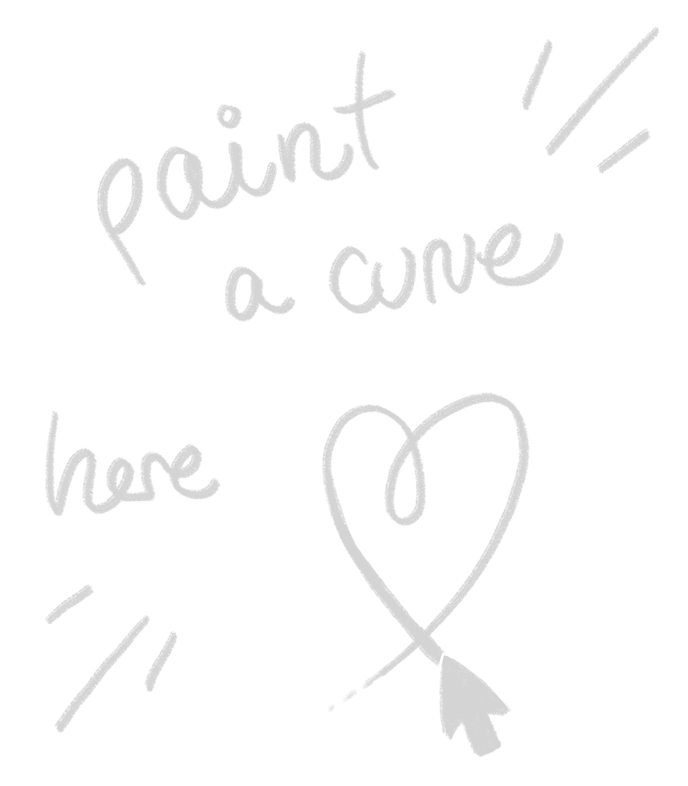

In dieser Einheit werden die Grundlagen parametrischer Kurven und Flächen erklärt.
Kurven sind überall wir wollen sie beschreiben, bauen und analysieren yeah yeah
beispiele für kurven

Kurven sind überall wir wollen sie beschreiben, bauen und analysieren yeah yeah
beispiele für kurven